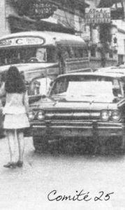
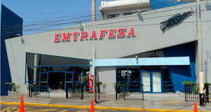

El 18 de febrero de 1961 un grupo de amigos y choferes formaron el comité de autos No 25 con el objetivo de brindar servicio de transporte interprovincial de pasajeros, encomiendas y valores en la ruta de Chiclayo -Trujillo y viceversa, integrado aproximadamente por 40 miembros. En 1973 se reúnen en una Asamblea quienes fueran los integrantes del comité N 25 no lográndose el consenso para optar por la regularización dispuesta por el Gobierno de turno lo que llevó a que sólo algunos de los integrantes decidan constituir el 13 de junio de 1977 la empresa de TRANSPORTES AVE FENIX S.A. (EMTRAFESA) como nuevo proyecto empresarial.Historia
Con parte de su fondo de ahorro económico se adquirieron dos buses de la Marca Volvo con los cuales continuaron operando en la misma ruta, siendo sus primeros choferes los mismos socios. Dos décadas después se elige al Directorio formado por los socios Manuel Plasencia Salas, Alejandro Pinedo De Los Ríos y como Gerente a José De La Cruz Culquitante quien estuvo durante 9 años de manera ininterrumpida al frente de la empresa inaugurándose en el 2002 el primer terminal terrestre en Trujillo, siendo los encargados de su construcción Raúl Ramos Gutierrez y Helmer Garcia De La Cruz, cumpliendo con las exigencias del Ministerio de Transporte y Comunicaciones y de la Municipalidad Provincial de Trujillo. contado con la amplitud y modernidad que la ciudad requería. Siendo padrinos el Alcalde José Murgia Zannier y la Congresista de la República Rosa León Flores.
